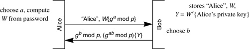

Networking Security Networking Security Networking Security Security Networking Security Networking Security Networking Charlie Kaufman Radia Perlman Mike Speciner Prentice Hall Network Security: Private Communication in a Public World, Second Edition
12.4. Strong Password Credentials Download Protocols
A credential is something that can be used to prove who you are, or prove that you are authorized to do something. In this case, it is easiest to think of it as a private key. It might be nice to assume that Alice has a smart card, that she has remembered to bring her smart card to work, that it is still functional after she accidentally ran it through the washer, and that the workstation has a smart card reader.
But suppose Alice does not have a smart card. All she knows is her name and password. If Alice walks up to a workstation that has trusted software but no user-specific configuration such as her trust anchors, then if she can somehow obtain her private key, she can obtain all the other information necessary to recreate her environment by downloading it from a central place such as the directory. The stored information in the directory can be secure because information such as her trust anchors that need to be integrity-protected can be signed with her private key. Information such as her cookies or browser bookmarks that need to be kept private can be stored encrypted with her public key. So the only issue is obtaining her private key.
We can use strong password protocols to do this. The private key is kept in the directory, encrypted with the user's password. Call that quantity Y. You don't want to make Y world-readable, since someone that has Y can test passwords against it. And you can't use traditional access control since Alice can't prove she's Alice until she obtains Y (and decrypts it with her password). Strong password protocols are ideal for downloading credentials.
For credentials download, the augmented protocols provide no added security. The only purpose of a credentials download protocol is to download Y. If someone has stolen Bob's database, then they already know Y!
[PERL99A] includes an analysis of credential download protocols, along with a two-message version that can be built upon any basic strong password protocol. Other properties are explored, such as the ability for Bob to save computation by reusing his Diffie-Hellman exponent b. In Protocol 12-4 we show one built upon EKE.

Bob cannot tell whether Alice really knew the password, but Alice can only guess one password in each on-line query, since once she encrypts by W she is committing to a single password. She only knows the a for the quantity she encrypted with the chosen W. So Bob can audit download requests and get suspicious if the credentials for the same user were requested too many times. Note that the key W' used to encrypt Alice's private key must be different from W, or else someone stealing Bob's database (not to mention Bob itself) would know Alice's private key.
|